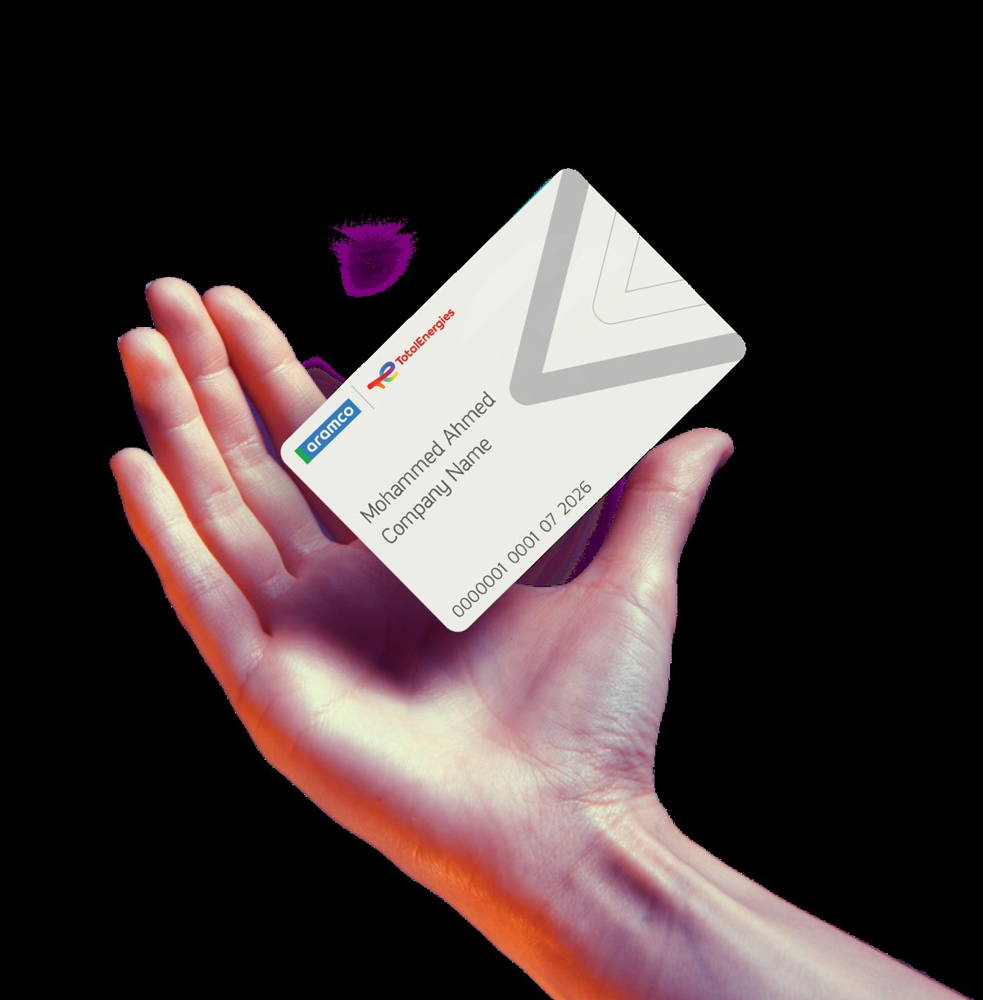
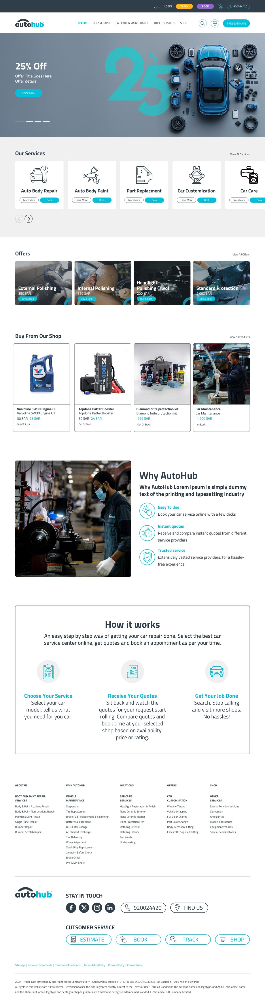
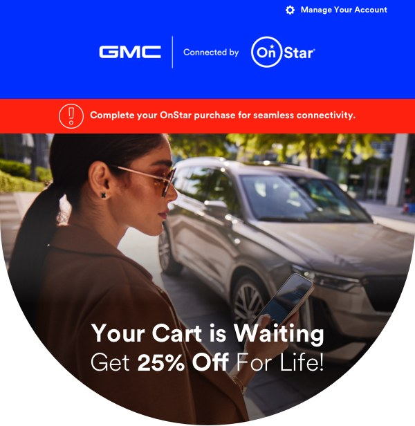

End-to-end platform delivery
Primary strategic partner to a global energy company, owning digital platform delivery across web and mobile from UX strategy through staging and production release. Bridged product, UX, QA, and engineering across a complex enterprise environment.
A global energy company with a $480B valuation needed a delivery partner to own the full digital lifecycle, from UX strategy through staging to production release across web and mobile. The environment demanded synchronised execution across multiple workstreams with minimal tolerance for delays or quality gaps.
- Operated as primary strategic partner, accountable end-to-end for delivery continuity
- Established multi-project governance frameworks for simultaneous workstreams
- Standardised UX-to-release pipeline with defined handoff protocols between design, QA, and engineering
- Bridged stakeholder communication across product, technology, and executive layers
- Shipped a GPT-based FAQ and self-service assistant across enterprise client portals, deflecting repeat support requests
Cut average delivery cycle time by ~30%. Maintained delivery continuity and program quality across 7+ simultaneous enterprise accounts, with this partnership as the anchor engagement throughout.


